文档目录：
- 常用私有容器镜像仓库
- Red Hat 支持的容器镜像仓库
- Red Hat 容器镜像安全
- Red Hat Quay v3 私有容器镜像仓库部署
- 参考链接
常用私有容器镜像仓库：
- Harbor v1/v2：由
VMware主导开发，并从CNCF云原生计算基金会孵化成功。 Red Hat Quay v3：由Red Hat开源的私有容器镜像仓库，类似于CoreOS的 Quay。- registry v2：
Docker公司发布的 v2 版本容器镜像仓库镜像，可直接运行提供服务。 - docker-distribution：由
docker-distributionRPM 软件包提供，systemd方式运行。
Red Hat 支持的容器镜像仓库：
- Red Hat Container Registry：
registry.access.redhat.com- 该仓库为公共镜像仓库，用于托管 Red Hat 产品的镜像，无需身份验证。
- 但请注意，虽然此容器镜像仓库是公共的，但 Red Hat 的大多数容器镜像规定要求用户拥有激活的 Red Hat 产品订阅，并且他们遵守产品的终端用户协议（EUA）。
- 只有基于 Red Hat Enterprise Linux Universal Base Images (
UBI) 的镜像可从该镜像仓库中自由地重新发布。
- Red Hat terms-based registry：
registry.redhat.io- 该仓库为私有镜像仓库，用于托管 Red Hat 产品的镜像，并且需要身份验证。
- 从该仓库拉取镜像时，需提供 Red Hat Customer Portal 凭证（credential）进行身份验证。
- 对于共享环境，如 OpenShift 或 CI/CD 管道，可创建
service account或身份验证令牌（token），以避免暴露个人凭据。
- Red Hat partner registry：
registry.connect.redhat.com- 该仓库为私有镜像仓库，用于托管来自认证合作伙伴的第三方产品的镜像。
- 它还需提供 Red Hat Customer Portal 凭证进行身份验证。
- 它们可能受制于合伙伙伴的认购或许可。
- Quay.io：
- Red Hat 还管理
Quay.io容器镜像仓库，任何人都可以注册一个免费帐户，并发布自己的容器镜像。 - Red Hat 对任何托管在 Quay.io 上的容器镜像都没有提供保证。
- 大多数用户使用 Quay.io 作为一个公共镜像仓库，但是组织（organization）也可以购买允许使用 Quay.io 作为私有镜像仓库。
👉 关于 Red Hat 容器镜像仓库的说明可参考 Red Hat Container Registry Authentication
- Red Hat 还管理
Red Hat 容器镜像安全：
- Red Hat Container Catalog（RHCC）可提供构建 S2I 构建镜像的基础容器镜像，也可直接提供 S2I 构建镜像，Red Hat Container Catalog 通过
https://registry.redhat.io作为容器镜像拉取与推送的 portal。 - 该容器镜像仓库中的镜像通过
Container Health Index进行安全性评估，可根据不同的评估结果选取开发者所需要的镜像，一般选择安全等级为A或B的镜像，以下以Go Toolset镜像为例确定其安全等级：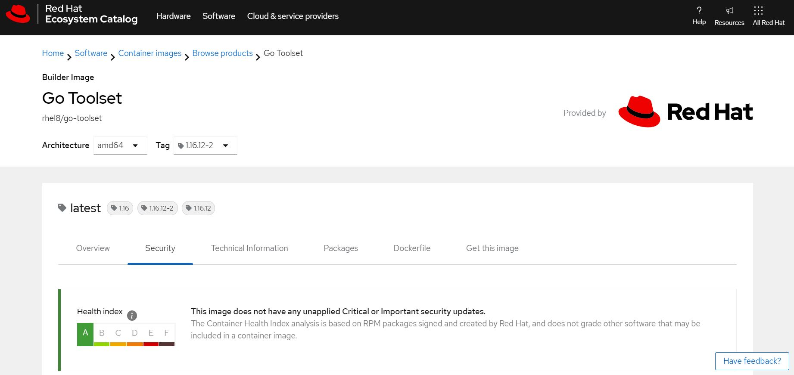 - 关于 Red Hat 容器镜像安全等级说明，如下所示：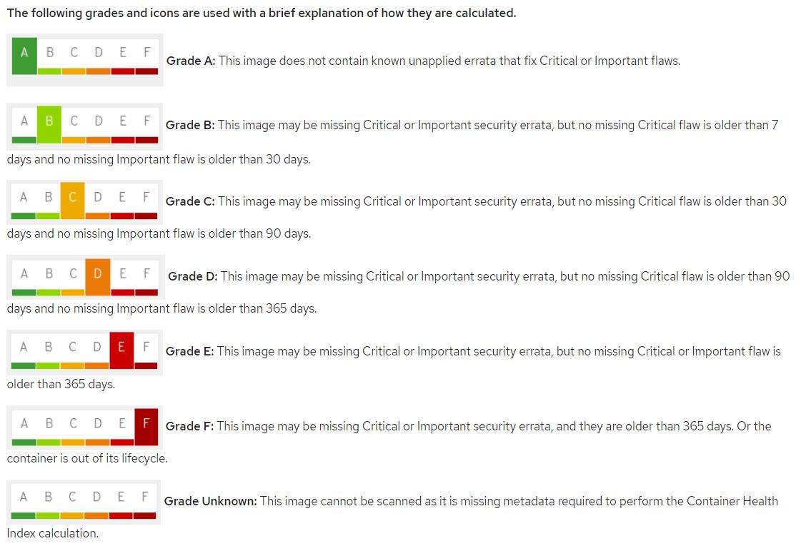
- Red Hat 安全评级说明文档可参考 Understanding Red Hat security ratings
- 容器镜像的安全评分与分级可参考 Security Scoring and Grading for Container Images
Red Hat Quay v3 私有容器镜像仓库部署：
- Red Hat Quay 容器镜像仓库的高级特性：
- 镜像安全扫描（image security scanning）
- 基于角色的访问（role-based access）
- 组织与团队管理（organization and team management）
- 镜像自动化构建（image build automation）
- 审计（auditing）
- 异地复制（geo-replication）
- 高可用（high availability）
- 该文档使用
basic方式容器部署，非HA方式。 - Red Hat Quay v3 私有容器镜像仓库组件：
Database：MySQL 或 PostgreSQL 数据库，主要存储镜像的元数据信息，而非镜像存储。Redis：键值型存储，存储实时构建日志与 Quay 的向导。Quay：容器镜像仓库，主要运行 quay 容器服务，该服务由多个组件组成。Clair：静态容器镜像扫描工具，可识别安全隐患与修复问题（fixes）。
- 部署的容器镜像与版本：
- MySQL：registry.access.redhat.com/rhscl/mysql-57-rhel7:latest
- Redis：registry.assess.redhat.com/rhscl/redis-32-rhel7:latest
- Quay：quay.io/redhat/quay:v3.3.0
注意：拉取该容器镜像前必须先使用相应账号登录 Quay，如下脚本所示。
- 使用
docker运行各个单容器方式的部署脚本请 参考此处。 - 🚀 推荐：
使用podman运行单pod集成以上所有容器方式的部署脚本请 参考此处（未集成 Clair）。
该方式中 quay-aio pod 将所有容器限制在同一network namespace中，Quay 的配置、部署与访问涉及众多端口，使用单容器运行于宿主机上将生成多条 iptablesfilter与nat表规则，而集成在单 pod 中更加便于管理。 - 以第二种方式为例，首先执行
quay-pod-manage config命令，再进行以下配置。 - 部署前首次配置 Quay 时，需通过 Web 页面将 Quay 与 MySQL 对接，指定仓库 FQDN 及对接的 Redis 数据库地址，若使用 pod 方式部署，其地址即为 pod 所在
network namespace的 ip 地址，并最终下载 quay 的.tar.gz配置文件。 - 运行以上命令可能出现的报错（现已解决）：
- 报错 1：由于
/mnt/quay/config/ssl.key权限问题导致无法启动 quay-master 容器，更改其权限为0644即可。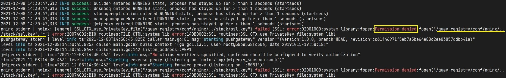 - 报错 2：由于
/mnt/quay/storage/所有者问题导致无法从客户端推送容器镜像至镜像仓库中，更改目录的所有者为1001即可，该用户为 quay-master 容器中主进程的运行用户，必须对宿主机映射的目录具有写权限。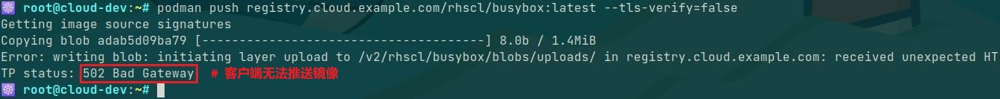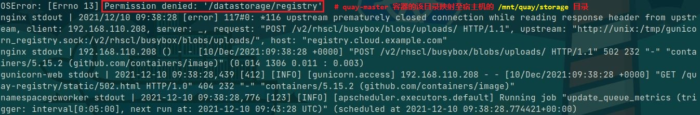
- 报错 1：由于
Web UI中的配置过程如下所示：- 配置并生成 Quay 配置文件：
- 登录 Quay 并完成认证：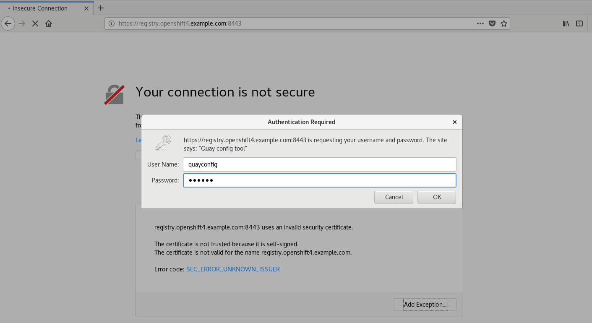
- 生成 Quay 配置文件：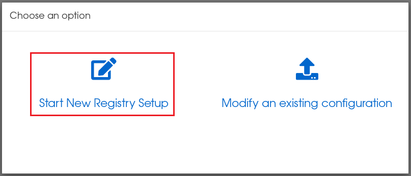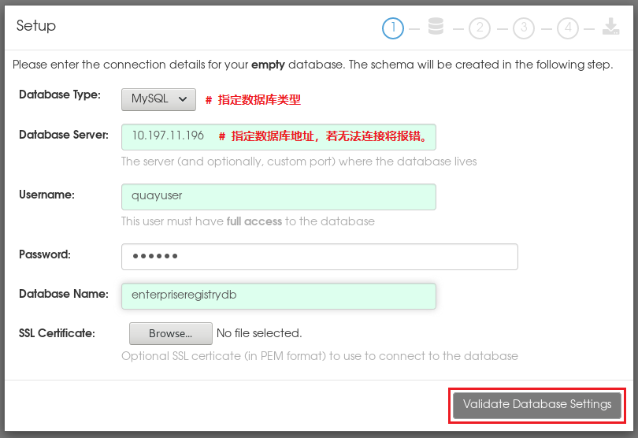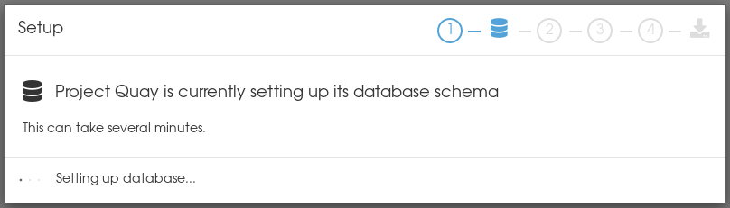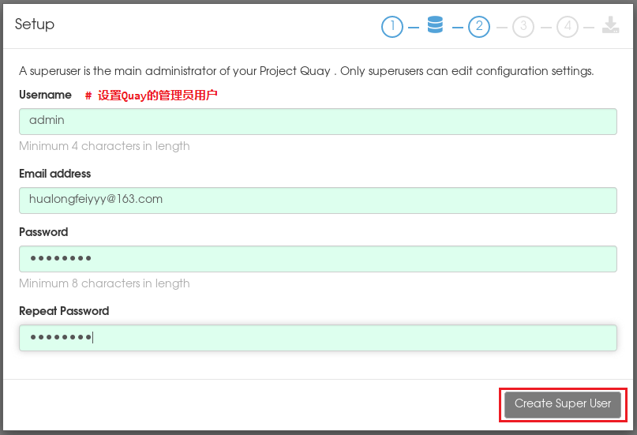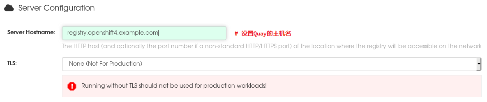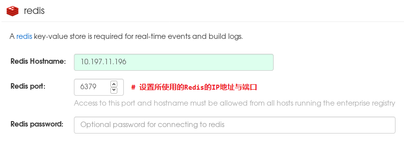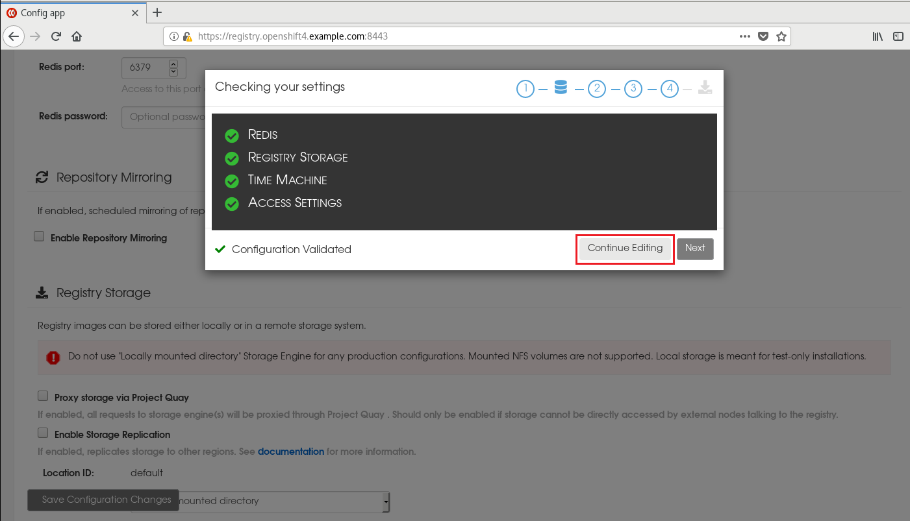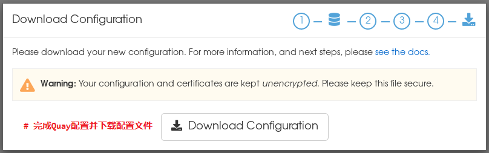
- 配置并生成 Quay 配置文件：
- 下载 quay 的配置压缩文件后，可执行
quay-pod-manage deploy命令完成 Quay 的部署。 - 若部署失败可执行
quay-pod-manage destroy命令销毁 pod。 - 若运行 Quay 的 quay-master 容器状态异常，可执行
quay-pod-manage recover命令恢复故障的容器。 - 登录与验证 Quay 私有容器镜像仓库：
用户名：admin密码：1qazZSE$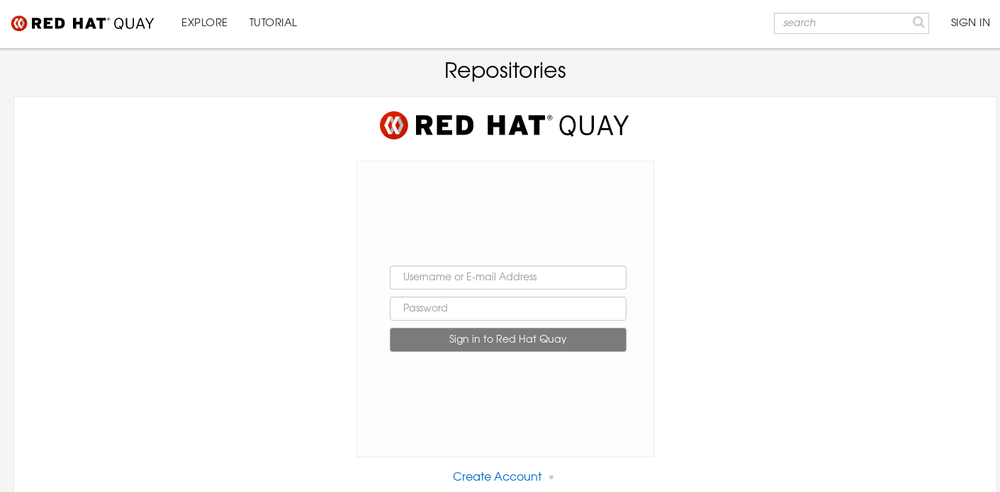 Podman 客户端登录 Quay：
使用基于Docker registry API的OCI distribution API登录并访问 Quay 容器镜像仓库，Red Hat 推荐使用基于 RHEL 的容器工具，即Podman、Buildah与Skopeo来访问该 API。1
2
3
4
5
6
7
8
9
10
11
12
13
14
15
16
17
18
19
20$ sudo mkdir /etc/docker/certs.d/<quay_registry_fqdn>/
# 创建 Podman 客户端 Quay CA 证书存储目录
$ sudo scp root@<quay_registry_fqdn>:/mnt/quay/config/ssl.cert \
/etc/docker/certs.d/<quay_registry_fqdn>/ssl.crt
# 同步 Quay CA 证书至 Podman 客户端
# su - contsvc
$ vim ~/.config/containers/registries.conf
unqualified-search-registries = ['<quay_registry_fqdn>']
# 该地址形如 registry.lab.example.com
[[registry]]
location = "<quay_registry_fqdn>"
insecure = true
blocked = false
# 配置普通用户的 Quay 私有容器镜像仓库地址
$ podman login <quay_registry_fqdn> \
--username admin --password 1qazZSE$ \
--log-level=debug
# 成功登录 Quay 私有容器镜像仓库，并开启 debug 模式。Docker 客户端登录 Quay（可选）：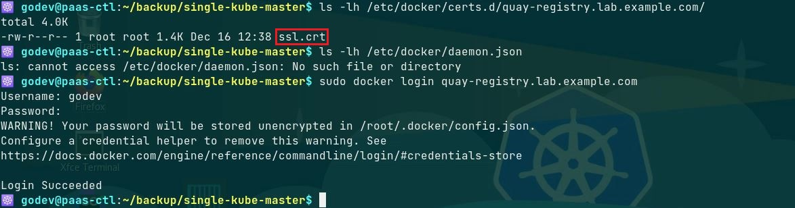
参考链接：
- Quay 基础版安装和部署
- Deploy Project Quay for proof-of-concept (non-production) purposes
- docker.github.io/registry/deploying.md
- docker.github.io/registry/insecure.md